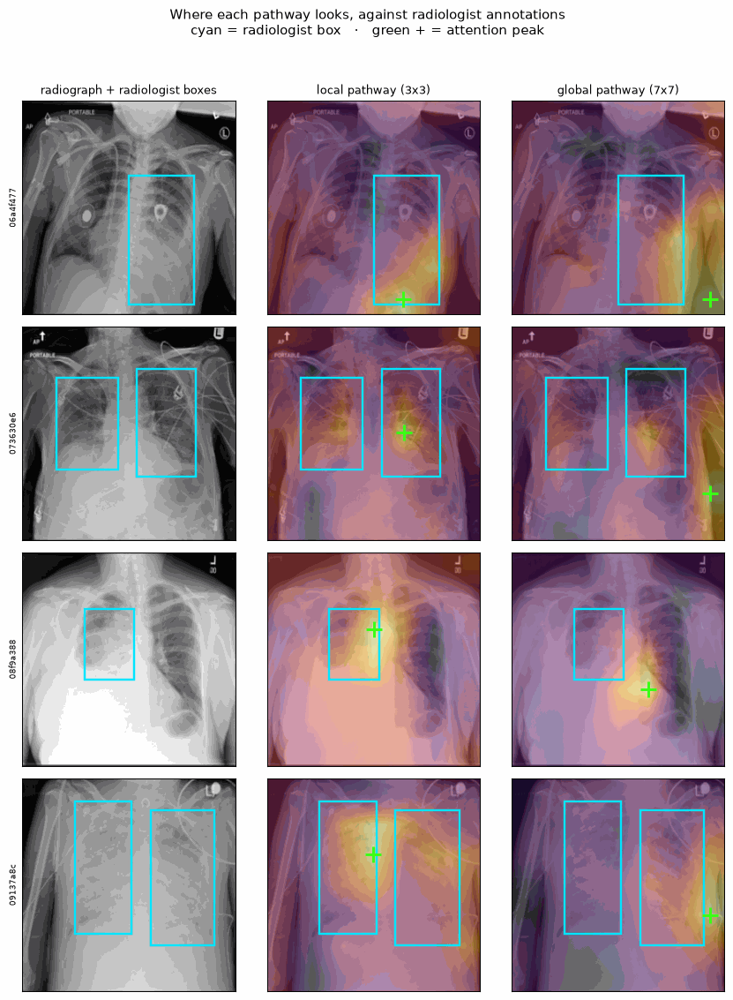

Five models, one training recipe
A custom dual-pathway CNN trained from scratch, compared against three ImageNet-pretrained CNNs and a classical HOG + linear SVM control. Every model shares the same loss, schedule, augmentation, stopping rule and checkpoint-selection metric, so differences are attributable to the model rather than to the setup.
Why accuracy is not reported as a headline
Model comparison
Three seeds per model, reported as mean ± standard deviation. The interval is a bootstrap over 2,000 resamples of the test set, computed per seed and averaged — it is test-set sampling uncertainty for a typical run, which is a different thing from the ± column beside it, and the two should not be read as one number.
Is the difference real?
Each model is compared against VeritasXR by paired bootstrap: both are scored on the same resampled test cases, so the shared difficulty of those cases cancels. This is the correct comparison — two marginal intervals can overlap while the paired difference is clearly non-zero, so reading overlap as "no difference" is a mistake.
Precision–recall and ROC
PR is the honest view under class imbalance; the dashed line marks the prevalence floor a no-skill classifier achieves. Series are distinguished by dash pattern as well as colour. Curves are seed 0 for every model — the same seed throughout rather than each model's best, but one run, so read the shape and not the last decimal.
Precision–recall
View as table
ROC
View as table
Training behaviour
Validation AUPRC per epoch, seed 0. Runs stop when it fails to improve for five consecutive epochs, so the lines end at different points.
View as table
Selective prediction
Accuracy when the model is allowed to abstain: the x-axis is the fraction of cases retained, ordered most-confident first. A curve that falls to the right means confidence is informative. Seed 0.
View as table
The operating point matters more than it looks
Every threshold-dependent metric above uses a fixed 0.5. That is not neutral: training uses a class-weighted loss, which shifts predictions, and these models differ in calibration by more than an order of magnitude, so 0.5 sits at a different place on each one's distribution. Tuned on the validation split — never on test.
Are the probabilities believable?
AUPRC grades ranking only. A model can order cases perfectly while being systematically overconfident — and the triage bands are read off the predicted distribution, so inflated probabilities produce inflated bands. A perfectly calibrated model sits on the diagonal; below it means overconfident. Three seeds per model — this table was single-seed once, and it overstated the custom model's advantage by an order of magnitude.

Where is each model looking?
The dataset ships bounding boxes drawn by board-certified radiologists around the opacities they identified, which allows a question accuracy cannot answer: when a model says pneumonia, is it looking at the right place? Scored over all 903 positive test images and averaged across three seeds, with the seed-to-seed spread shown. The pointing game asks whether the attention peak falls inside a box — no threshold to tune.
The two pathways do not look at the same thing
Deliberately balanced: the top rows are cases the local pathway gets right and the global one misses, the bottom rows the reverse. Neither pathway dominates, so showing only one direction would illustrate a claim the data does not support.

Ablation — does each design decision earn its place?
Variants of the custom model, each removing or replacing one component.
Calibration is cheap to buy
Calibration is a property you can add after training: one temperature fitted on the validation split, applied to the test logits. It leaves the ranking exactly unchanged and moves an overconfident model onto the diagonal. So if a model's calibration advantage is really an advantage, it has to survive the baselines being given that same free scalar.
Was one shared learning rate unfair to anyone?
Every model trains at the same rate, which is what makes the comparison a comparison — but it is also the most obvious thing to blame for the custom model's deficit. So it was measured rather than argued about: each model retrained at a tenth and at three times the shared rate.
Method and limitations
Dataset
Known limitations
- Single dataset, single task. No external validation cohort.
- The learning-rate probe is one seed per rate, three rates, and does not interact with batch size or schedule.
- Labels derive from radiologist report review, not from confirmed microbiology.
- Horizontal flip is deliberately excluded: mirroring a radiograph implies situs inversus.
- Uncertainty is epistemic only — pathways that agree while both being wrong score as confident.